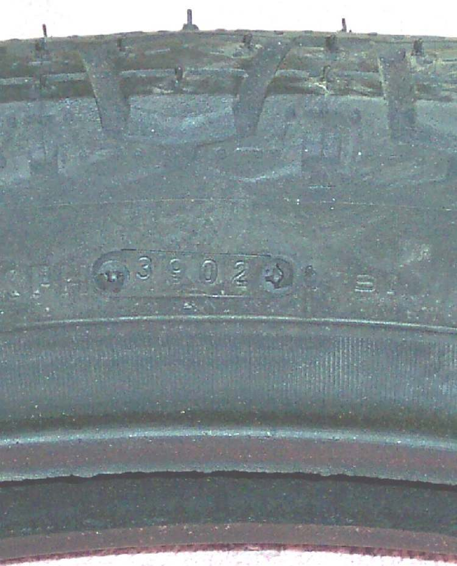

The tyres are the only parts touching the road. This check finds worn tread, cuts, cracks, bulges and objects stuck in the tyre before they cause a crash or a flat. Do it every week and after hitting a pothole or kerb hard.
Safety
- Put the bike on the centre stand, or lift each wheel, so you can turn it. Keep fingers away from the chain and sprocket.
- Do not pull out a nail or screw at the roadside unless you are ready to repair the hole. The object often seals the hole until then.
- A bulge, a cut to the cords or a crack that shows cords means stop riding on that tyre.
You need
- A torch, a tread depth gauge or a small ruler, chalk to mark the start point.
- Small pliers to pick out stones from the tread grooves.
Steps
- Mark the tyre with chalk next to the valve so you know when you have gone all the way round.
- Turn the wheel slowly and look at the whole tread. Pick out stones. Mark any nail, screw, glass or thorn with chalk. Do not pull it out yet.
- Measure tread depth in the main grooves at several points. Many tyres have small raised bars in the grooves (wear indicators); a small triangle or "TWI" on the sidewall shows where. When the tread is level with the bars, the tyre is worn out. K-Light 125 manual: wear limit 1 mm. Local law may set a different minimum: follow it.
- Look at the shape of the wear. Flat in the centre: see Tyre worn flat in the centre. Saw-tooth or scalloped blocks: see Tyre worn into a scalloped or cupped pattern.
- Check both sidewalls. Look for cuts, scrapes from kerbs, cracks, and bulges. Bend the rubber gently with your thumb to open small cracks.
- Check the bead area next to the rim for damage, and the rim edge for dents.
- Find the date code: four digits in an oval, near the letters DOT. The first two are the week, the last two the year (for example 0521 is week 5 of 2021). Old rubber hardens and grips less even when the tread is deep.
- Check the direction arrow on the sidewall points the way the wheel turns forward, and that front and rear tyres are fitted in the right position if they are marked "front" and "rear".
- Read the size on the sidewall and compare it with your manual. K-Light 125: front 90/90-17, rear 130/90-15, tubeless.
- Check the valve: see Check and replace a tyre valve.
Check your work
- You have looked at the full circle of both tyres, both sides.
- Any object found is marked and you know whether the tyre has a tube or is tubeless.
If it did not fix the problem
- Object in the tread: Flat tyre on a tubeless wheel or Flat tyre on a wheel with an inner tube.
- Bulge, deep cut or cracks into the cords: Tyre has a bulge or cut and Replace a tyre.
- Worn unevenly from side to side: check wheel alignment and chain adjuster marks.
Reference values (K-Light 125)
| Item | Value | Source |
|---|---|---|
| Tread wear limit | 1 mm | K-Light 125 manual, PDF p. 71 |
| Front tyre size | 90/90-17 tubeless | K-Light 125 manual, PDF p. 19 |
| Rear tyre size | 130/90-15 tubeless | K-Light 125 manual, PDF p. 19 |